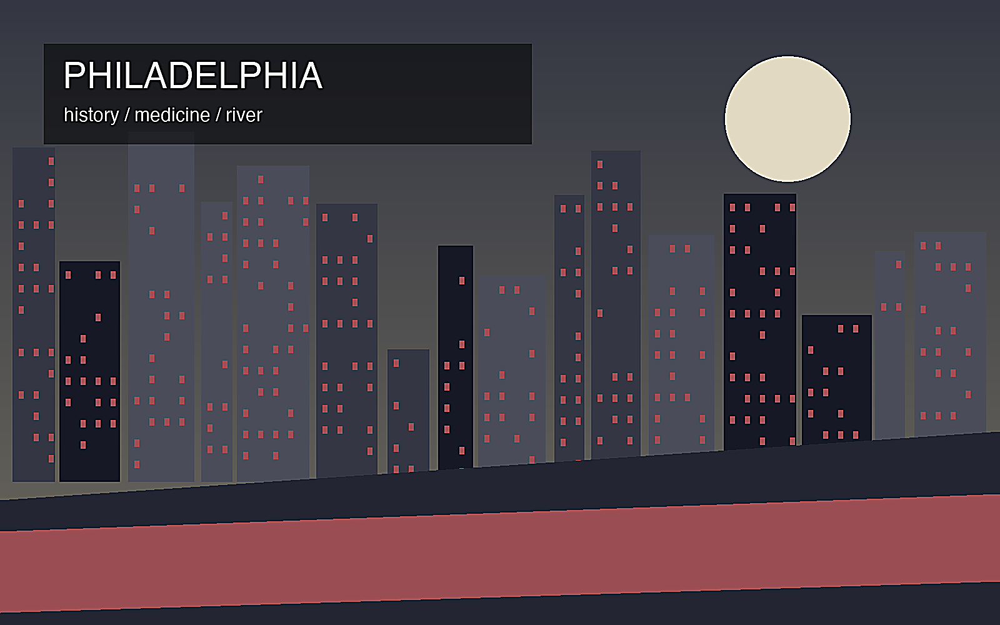
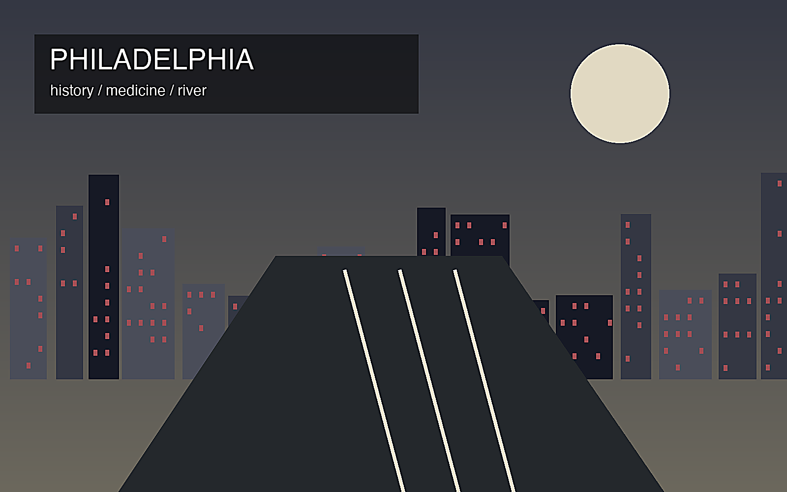

地政学
デラウェア川沿いの歴史都市で、米国建国の記憶、大学、医療、物流が重なる。

🇺🇸 アメリカ合衆国 / 北米 / World City Atlas
独立史と医療教育の都市圏。世界都市として、経済規模だけでなく、地理、産業、宗教文化、暮らし、観光を分けて読みます。
都市の骨格
デラウェア川沿いの歴史都市で、米国建国の記憶、大学、医療、物流が重なる。

デラウェア川沿いの歴史都市で、米国建国の記憶、大学、医療、物流が重なる。
医療、大学、製薬、金融、港湾物流、食品、観光が都市経済を支える。
クエーカー、カトリック、黒人教会、移民宗教が歴史地区と生活地区に根づく。
独立記念館、旧市街、壁画、食品市場、大学街、スポーツ文化が都市体験を作る。
Geography
都市の経済力は、地図上の位置、港湾、鉄道、空港、河川、周辺都市との関係から生まれます。
デラウェア川沿いの歴史都市で、米国建国の記憶、大学、医療、物流が重なる。
フィラデルフィアを単体の市街地としてではなく、周辺の住宅地、産業地、物流施設、教育機関と接続した都市圏として見ると、GDPの大きさが日々の通勤、土地利用、観光、文化施設の配置にどう表れているかが分かります。
医療、大学、製薬、金融、港湾物流、食品、観光が都市経済を支える。
この都市では、華やかな中心業務地区の背後に、清掃、建設、配送、調理、介護、教育、保守、警備といった日常的な労働があります。都市の経済規模を見るときは、数字だけでなく、その数字を支える人と場所を同時に見る必要があります。
Industry
主力産業だけでなく、周辺の小さな仕事が都市を毎日動かしています。
Culture
宗教施設、祭礼、市場、劇場、大学、移民地区は、都市の経済とは別の時間を保存します。
クエーカー、カトリック、黒人教会、移民宗教が歴史地区と生活地区に根づく。
独立記念館、旧市街、壁画、食品市場、大学街、スポーツ文化が都市体験を作る。